01スマホで PC 表示がそのまま縮小され、文字が読めない
- 原因
- viewport の指定がなく、スマホのブラウザが幅 980px 以上の PC 表示として描画して縮小している
- 修正
- <meta name="viewport" content="width=device-width, initial-scale=1"> を追加し、959px 以下では固定幅（960px）をやめて画面幅に合わせて伸縮するよう変更
- 確認幅
- 375px

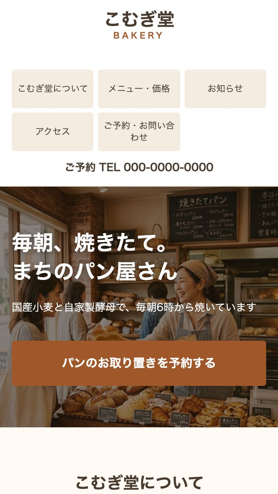
2026-10-03
※ ポートフォリオ用のサンプルです。修正前のサイトは、よくある表示崩れを再現するために作成した架空の店舗のサイトです。
PC 向けに作られた既存サイト（固定幅 960px・float レイアウト）を、スマホ・タブレットに対応させました。PC（幅 960px 以上）の見た目は、長い URL の改行（1か所）を除いて変えていません。
修正前後のページ全体を PC の幅（PC の表示）で撮影し、ピクセル単位で比べました。意図して PC にも入れた修正（下記）を修正前にも当てた状態で比べています。
| 幅 | 変化したピクセル | ページの高さ |
|---|---|---|
| 960px | 0%（0px） | 4259 → 4259px |
| 1024px | 0%（0px） | 4259 → 4259px |
| 1280px | 0%（0px） | 4259 → 4259px |
| 1440px | 0%（0px） | 4259 → 4259px |
PC にも入れた修正: body { overflow-wrap: break-word; }

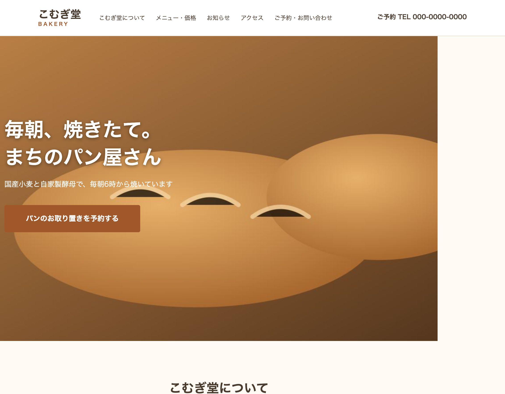
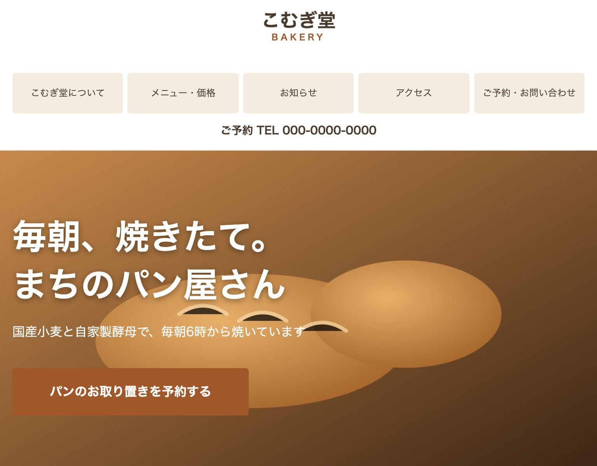
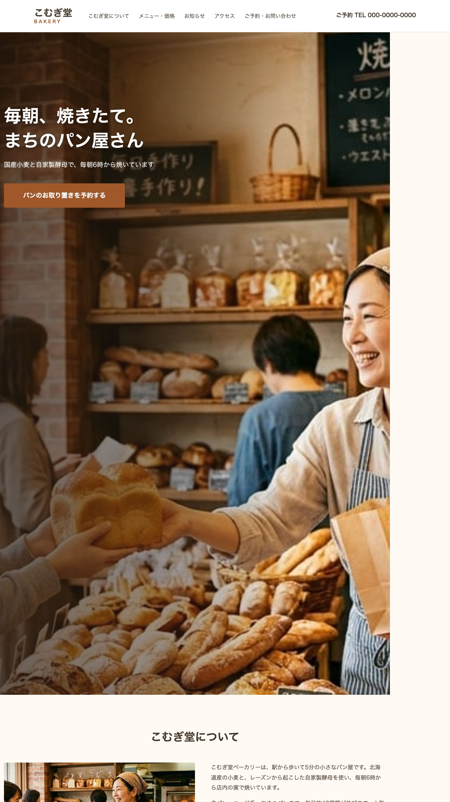
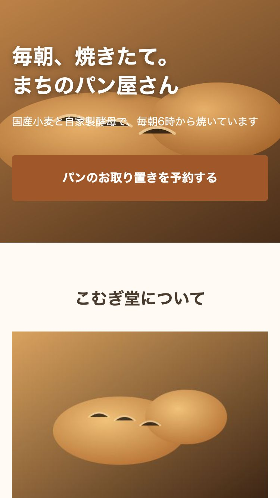
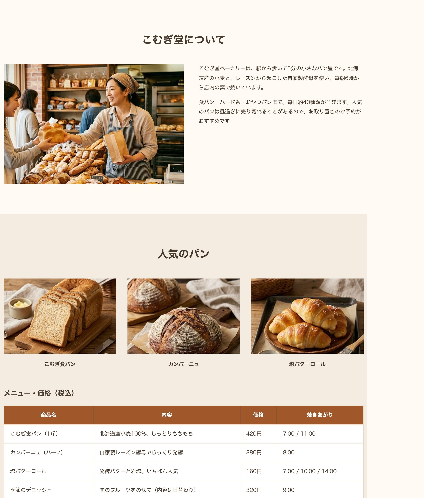
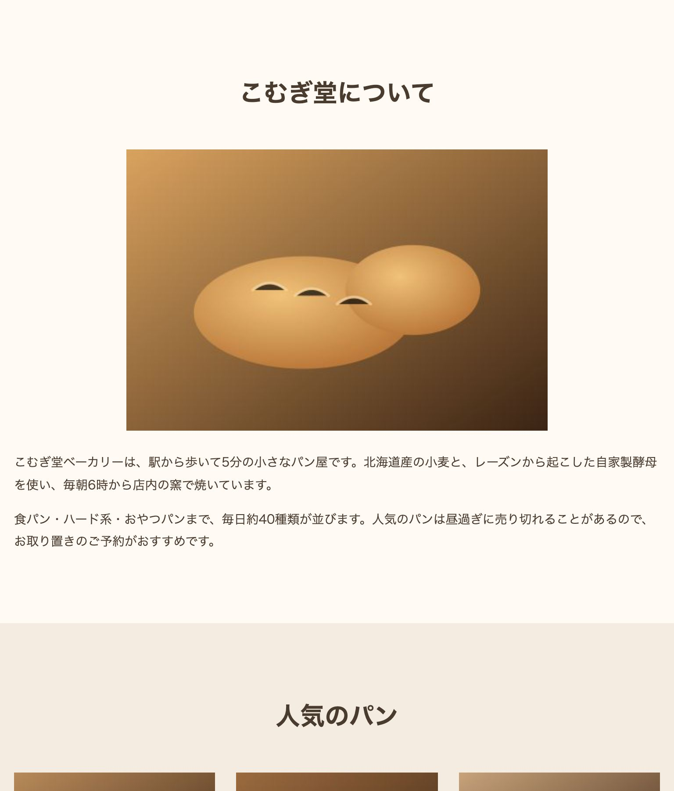
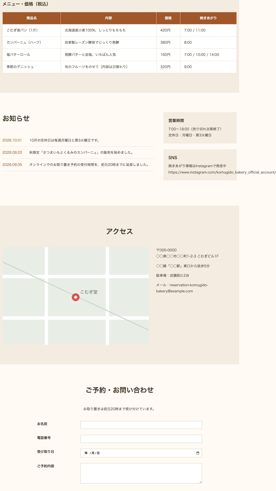
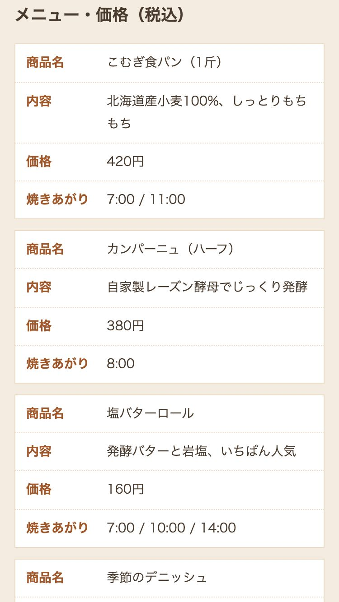

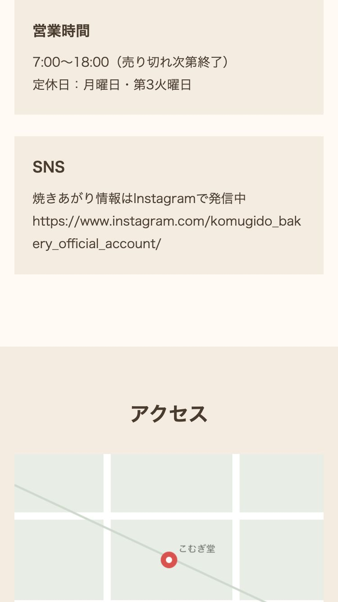
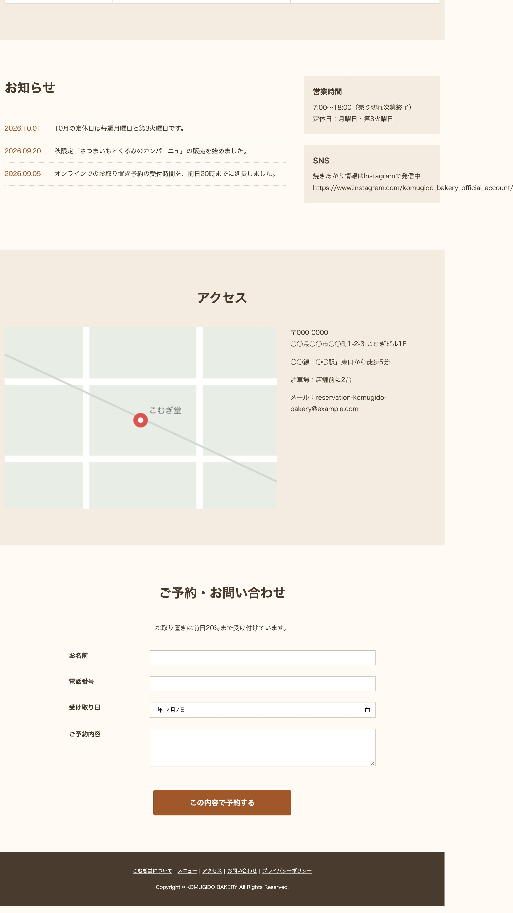
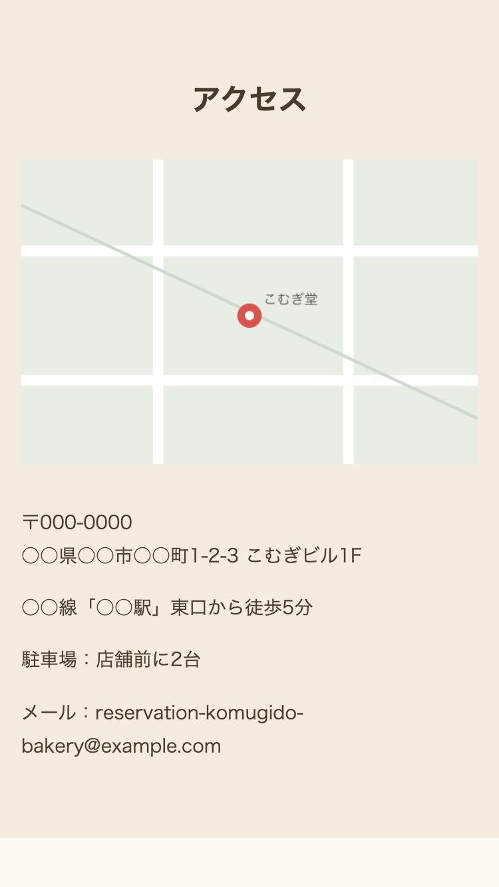

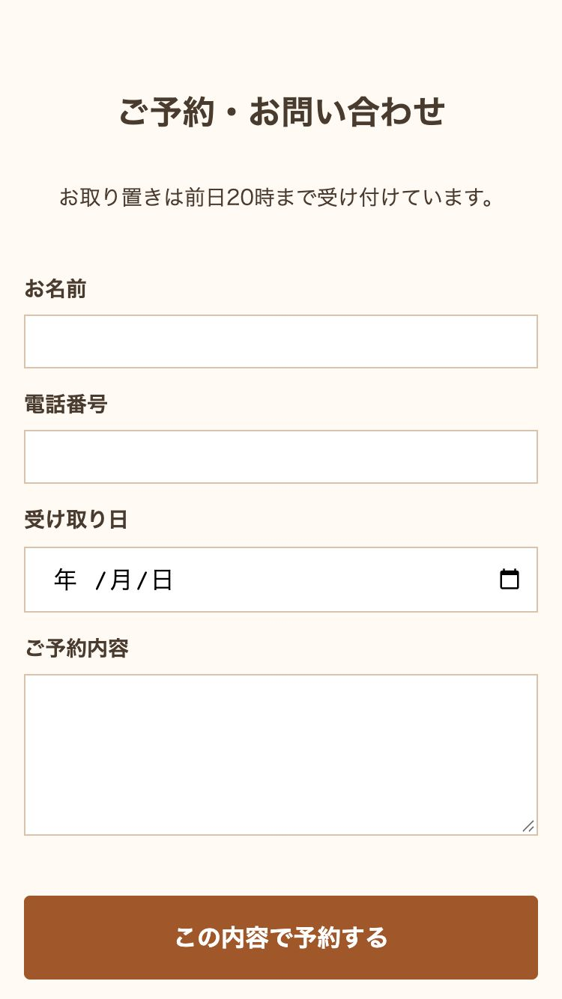

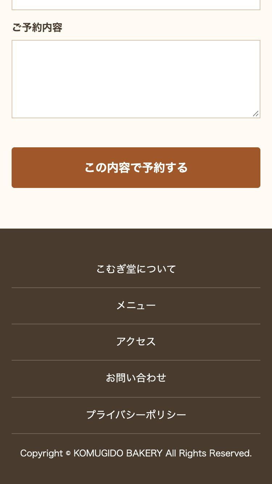